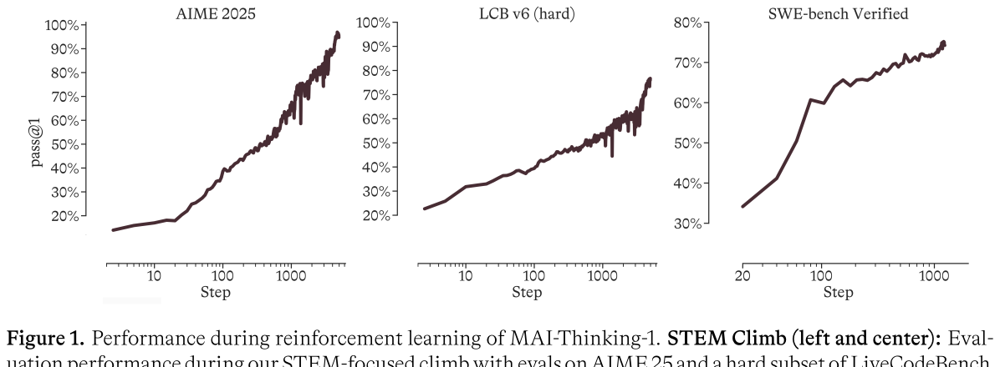
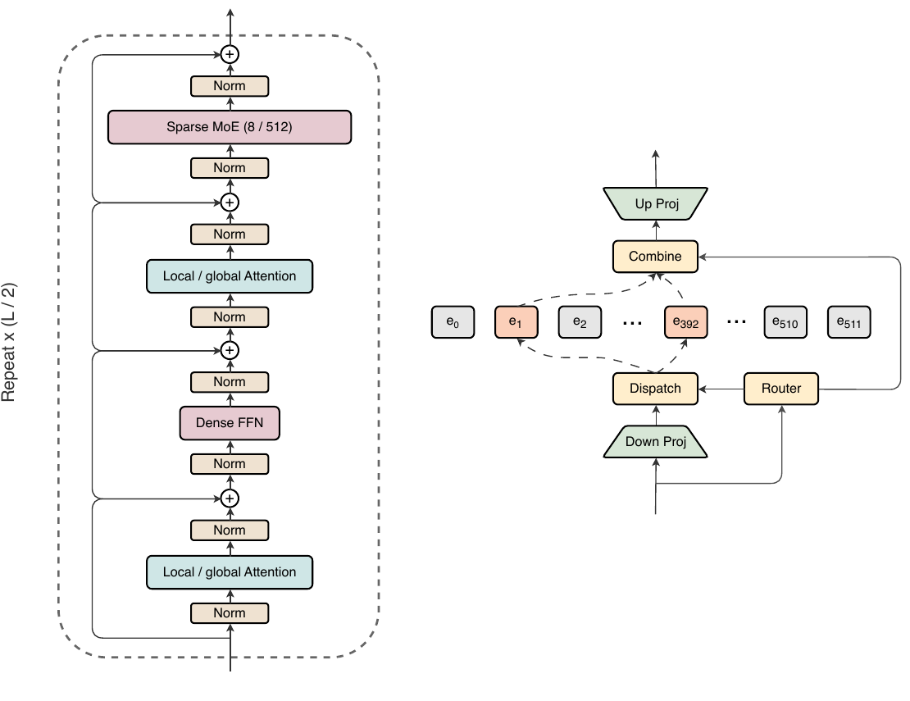
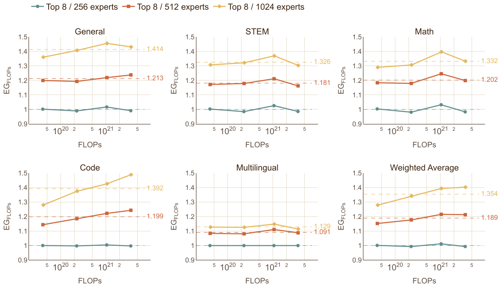
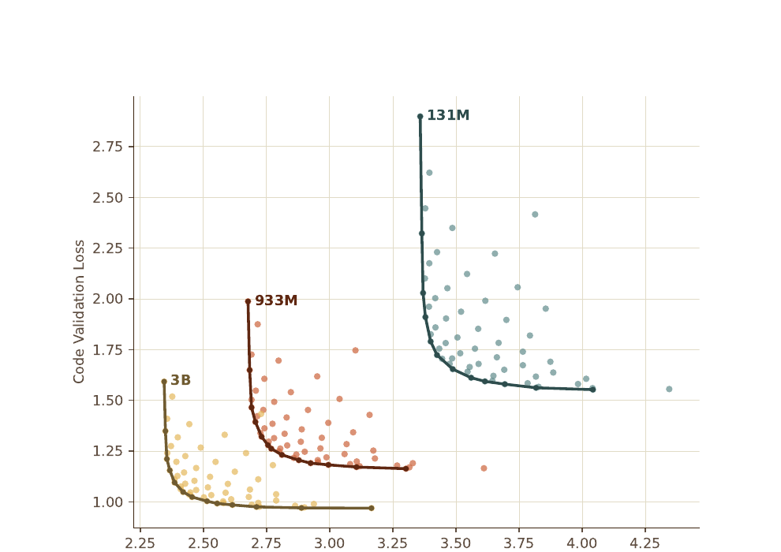
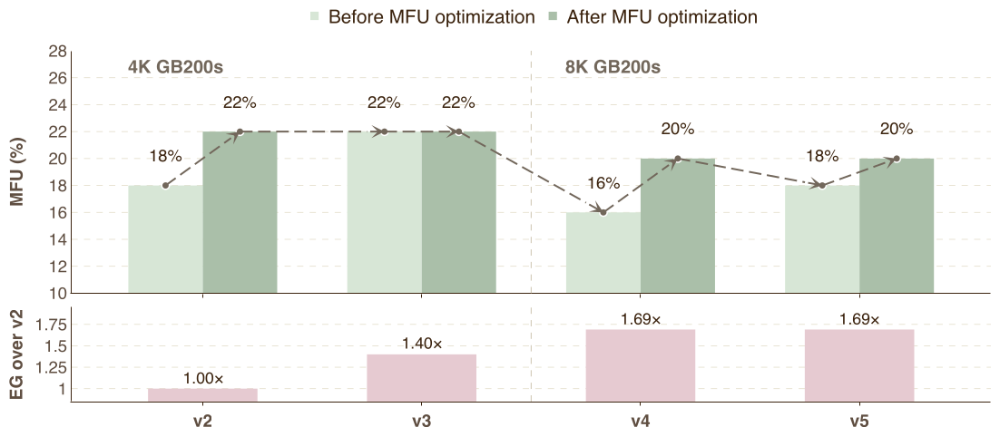
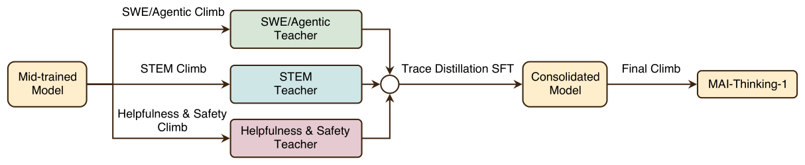
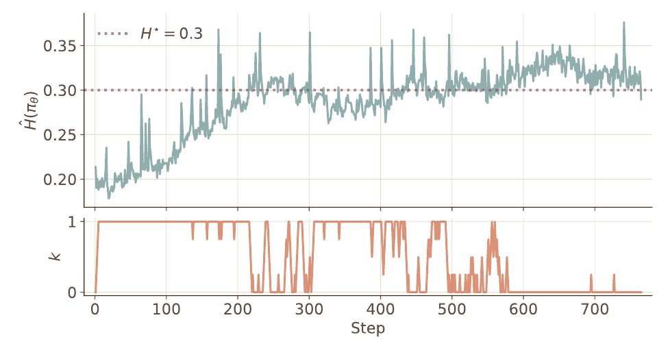

MAI-Thinking-1：构建一台"爬山机器"
35B active / 1T total MoE · 从零训练 · 无第三方蒸馏 · 纯企业级数据
引言 · 把模型研发变成"爬山"
这份报告的核心论点颇具颠覆性：AI 的真正进步不来自某一个模型的突破，而来自持续在当前最优模型之上迭代提升的能力。因此微软 AI（MAI）团队把模型研发重新定义为一个系统级优化问题，其解决方案被命名为"hill-climbing machine（爬山机器）"——一套把数据管线、训练基础设施、强化学习环境与奖励、评测套件、安全测试整合在一起、将模型开发转化为经验性优化闭环的集成流程。
核心规格与头条成绩

三大设计原则
① Capabilities should be learned, not inherited（能力应被习得，而非继承）。 蒸馏虽快，但模仿来的智能缺乏长期爬升所需的可操控性（steerability）与鲁棒性（robustness）。因此明确放弃从第三方模型蒸馏，RL 从一个从未见过任何 reasoning trace 的 checkpoint 开始，CoT 推理能力完全从零学起。
② Simplicity is sustainable（简单才可持续）。 偏好简单可扩展的配方、干净可信的数据、透明的基础设施。
③ Scientific rigor avoids shortcuts（科学严谨避免捷径）。 每个决策都必须通过 data-driven ladders（数据驱动的缩放梯子）、ablations、evaluations 来验证——这条原则贯穿全篇，是"爬山机器"的方法论内核。
2 · 预训练：MAI-Base-1
基座模型 MAI-Base-1 是一个 35B-active / 1T-total 稀疏 MoE，在 Azure 内 8K 张 GB200 GPU 上用自研 YOLO 框架从零训练，主预训练 30T tokens，再加两阶段 mid-training 共 3.55T tokens。
架构：交错注意力 + LatentMoE

关键架构选择（均经 EG 消融验证）：
- 78 层，hidden 6656，架构由层数 $L$ 单参数确定：$D = L\times256/3$。
- 5:1 交错注意力（Gemma 3 式）：5 层局部注意力（滑窗 512，RoPE base 10000）配 1 层全局注意力（全局层用 NoPE 无位置编码）。GQA 8 个 KV 头、per-head dim 128，对 Q/K 施加 RMSNorm。
- FFN 交替：高稀疏 MoE 层与零稀疏 dense FFN 交错（首层为 dense），均用 SwiGLU。
- LatentMoE：512 专家 top-8、softmax gating，全 dropless，全局 batch 负载均衡（关键在跨 DP worker/micro-batch 的全局聚合而非 loss 类型）。
- RMSNorm 置于残差前的输入与输出端，无 bias，输入输出 embedding 权重绑定；tokenizer 用 o200k_base（词表 200,019）。
缩放方法学：Efficiency Gain 与 scaling ladder
量化某个设计选择"省了多少算力"的核心指标。先对 baseline 拟合 scaling law $\mathcal{L}=A\,C^{-\alpha}+E$（loss 关于算力 $C$），再定义 $\text{EG}=f^{-1}(\mathcal{L}')/C'$：即达到新模型的 loss $\mathcal{L}'$，baseline 需要多少算力，除以新模型实际用的算力 $C'$。EG = 1.3 意味着 baseline 要多花 30% 算力才能追平。论文进一步区分 $\text{EG}_{\text{FLOPs}}$（解耦硬件利用率）与 $\text{EG}_{\text{Time}}$（含实际 wall-clock）。

方法：用 scaling ladder（L12–L78，固定 TPP）做架构消融，消融在 Chinchilla 最优区 100–200 TPP，主跑则over-train 到 500–1000 TPP。一个反直觉的发现是 rank invariance 假说不成立——某个数据配方在小规模占优，到 23B 规模会被另一配方反超（因两个低多样性 STEM 源在大规模失效），所以所有决策都必须按 ladder 验证其缩放性而非单点表现。
数据：30T 纯人类、零合成
这是 MAI-Thinking-1 最有特色的部分。五大源（Web HTML、Web PDF、GitHub Code、Books/Journals），全程 in-house 处理，不用任何 LLM 合成数据，主动剔除采集源中的 AI 生成内容，不用开源训练集，并对常见 ML 数据库去污染。各源知识截止日期不同（Web HTML 2025/9、Web PDF 2025/12、GitHub Code 2025/6、Books 2026/3）。完整占比见下文 Table 5。
去重与去污染极其严格：MinHash LSH 模糊去重（阈值 0.8）、Qwen3-Embedding-0.6B 语义去重、跨数据集 global drop-order 去重；去污染移除 huggingface.co 及镜像、20-gram 模糊去重相似度阈值 80%、并自建私有 benchmark。评测统一用 NLL / bits-per-byte（BPB）而非多选题（teacher-forcing 更鲁棒、成本低），聚合权重 $\text{Target}=0.5\times\text{Code}+0.175\times\text{STEM}+0.175\times\text{Math}+0.1\times\text{General}+0.05\times\text{Multilingual}$。
如何科学地"选配方"：数据混合的帕累托前沿
占比表只是结果，论文真正的方法论贡献在于怎么从数百个异构数据源里搜出这套配比。这是"爬山机器"在数据侧的体现——把"选数据"也变成一个可量化、可缩放验证的优化问题，而非靠经验拍脑袋。核心难点有六个：①效用难定义（无法对每个候选配方都跑完整后训练）；②搜索空间巨大（数百源的组合空间无法穷举）；③尺度相关（某源在小模型有用、大模型未必）；④跨源交互（数据源互为补充又互相替代，不能独立评估单源价值）；⑤多 epoch 效应（高质量但小的数据集在长训练下会被反复消费直至过拟合）；⑥算力成本（训练大量配方模型本身极贵）。

团队的解法是 forecasting（小尺度预测）+ 分层交替搜索：先在 L12–L36（760M–4B active）规模训练数千个小模型拟合预测函数，用 Eq.3 聚合成单一分数来全局最小化。但他们发现一个反直觉的坑——rank invariance 假说（小尺度的配方优劣排序在大尺度保持）并不成立：早期的 stem-heavy-mix 在小模型胜过 code-heavy-mix，但训练到 23B 规模时被反超（Fig 6），原因是两个高质量但低多样性的 STEM 源——在 stem-heavy 里占 11.8%、code-heavy 里仅 0.3%——对小模型很有用、对大模型因缺乏多样性而失效。这直接导致后续所有数据决策都必须用 scaling ladder 验证其缩放性，而非单点表现。最终配方经"局部搜索（固定大类、调子类权重）+ 全局搜索（固定子类构成、调大类权重）"交替优化得到，任一数据集最多重复 8 epoch 以防过拟合。
| Source family | Unique (T) | Training (T) | Mix % | Avg. Epochs |
|---|---|---|---|---|
| Code | 7.4 | 16.4 | 54.6 | 2.22× |
| STEM | 2.2 | 4.7 | 15.8 | 2.17× |
| Math | 0.3 | 1.6 | 5.4 | 5.28× |
| Books and journals | 0.6 | 0.9 | 3.1 | 1.65× |
| PDFs | 2.7 | 1.4 | 4.7 | 0.53× |
| Web text | 8.1 | 4.5 | 14.9 | 0.55× |
| Multilingual (other) | 8.1 | 0.5 | 1.6 | 0.06× |
| Total | 29.2 | 30.0 | 100.0 | 1.03× |
Table 5（论文原表）。Unique = 各源去重后的唯一 token 数，Training = 整轮实际消费的 token 数，Avg. Epochs = 两者之比（>1× 即重复采样）。可见 Code 是绝对主力（54.6%），Math 虽只有 0.3T 唯一 token 却被采样 5.28× 至 1.6T，而 Web text / PDF / Multilingual 全程不到 1 遍——8.1T 的多语料只用了 0.5T（0.06×），是被压得最狠的一类。注意 PDF 与 Web 里的 math/stem 内容已被归入对应学科类，不重复计。
Mid-training 两阶段，偏向 STEM/math（升至 35%）、code 55%，用 Bloom 认知层级（≥Analyze）过滤 PDF，并引入 memorization-aware epoch capping（用 NLL<0.01 token 占比代理记忆度，对高记忆源更严格限 epoch）。上下文从 16k → 64k → 256k 扩展，仅 re-pack 不改 mixture。
稳定性、超参与精度
关键稳定 trick：attention 输出零初始化。把 output RMSNorm 的 gain 设为 0，避免初始时注意力近似均匀池化导致 token 表征坍缩、进而引发 MoE 路由极度不均衡。这个 trick 经 EG 验证有实质质量增益。
- 优化器：AdamW（$\beta_1{=}0.95, \beta_2{=}0.925, \epsilon{=}10^{-8}$），weight decay 0.1（attention 0.01、embedding 0.005），grad clip 1.0。
- 学习率：12B token 线性 warmup 后 cosine 从 $2\times10^{-4}$ 衰减到 $2\times10^{-5}$——注意 final/peak = 0.1× 而非常见的 0.01×，因为更高的终点学习率更利于后续 RL。
- dropout 0.15（每层输出残差前）：非常规但有正则增益；global batch 134M tokens。
- 精度：BF16 默认 + FP8（E4M3 forward GEMM / E5M2 data-grad），FP8 delayed scaling（1024 步历史），残差流/embedding/router/logits/optimizer 全 FP32，跨精度梯度用随机舍入。30T loss 曲线早期有 spike（多与 code 数据 + dropless 专家不均衡相关）但快速恢复，全程无跳过 batch、无人工干预。
架构经 v1–v5 五代协同演进：v2（23B, 4K GPU, MFU 18%→22%）、v3 切 dropless、v4 引入 512 专家 + top-8 + LatentMoE 并扩到 8K GPU、v5 扩到 35B/1T。20+ 项优化使每代 MFU 维持在 20% 以上。

3 · 强化学习爬升
RL 从一个完全没接触过 reasoning trace 的 mid-trained checkpoint 出发，CoT 能力从零学起——长期稳定性因此是首要挑战。整体策略见 Figure 12。

RL 算法：GRPO + 两项关键改造
基于 GRPO（Shao et al. 2024）+ token-level policy gradient。advantage 用组内 reward 标准化，在全局 batch 所有 token 上归一化：
其中 $r_{i,t}$ 是重要性采样比，$A_i$ 是组内标准化优势。为维持数千步 log-linear 爬升，加了两项改造：
用一个 integral controller 在线调整 clip 上界的放松量 $k$，把策略熵维持在目标值 $H^*=0.3$，避免熵爆炸或熵坍缩。clip 上界写成 $\mathrm{clip}(r_{i,t},\,1-\epsilon,\,(1-\epsilon)^{-1}+k)$，初始 $k=0$ 使上下界在 log-ratio 空间对称。熵用重要性加权估计，控制器按 $k\leftarrow\mathrm{clip}(k+\delta\cdot\mathrm{sign}(H^*-\hat{H}),0,k_{\max})$ 更新（$\delta{=}0.25, k_{\max}{=}2.5$）。

对 GRPO 故意保留的两个 unclipped 分支再加一层硬外层 clip $\mathrm{clip}(r_{i,t},r_{\min},r_{\max})$（$r_{\max}{=}50$，$r_{\min}$ 不约束），消除灾难性的 gradient-norm 尖峰。类似 dual-clip PPO。
奖励设计
- 语言一致性 $R_{\text{lang}}$：惩罚 CoT 中的非英文词（$w_{\text{lang}}{=}0.5, \alpha{=}0.005$），因为混合语言 CoT 会引发训练/推理 logprob 分歧。
- 难度自适应长度惩罚 $R_{\text{len}}$：与问题 pass rate $\rho_q$ 挂钩——难题弱惩罚（允许长推理），易题强惩罚（促简洁），$w_{\text{len}}{=}0.25$，到 128k 阶段移除。
采样：early-exit 先采 16 个估 pass rate（合格才采满 128），二次过滤去除低方差组；top-p=0.97 并复用 nucleus mask 把界外 token logit 置 $-\infty$ 防 off-policy 发散；长度课程 8k→16k→32k→64k→128k 逐步翻倍。
自蒸馏与三个专家模型
Self-distillation 是长跑爬升的关键。收集 RL rollout 做 SFT 重启 climb，用于：(a) 从 prompting 切到原生 chat 格式；(b) 崩溃后重置数值（优于回滚 checkpoint，因不稳定性已提前嵌入参数）；(c) 跨 base policy 迭代；(d) 过滤 reward hacking。关键发现：O(1M) traces 足够匹配 teacher；含错误答案的 trace 效果相当；后期 checkpoint 的 trace 更重要；prompt 多样性比每 prompt trace 数更有价值。
| 专家 | 数据与环境 | 奖励信号 |
|---|---|---|
| STEM | 5M STEM Mix（最难子集 550k）+ 160k 竞赛代码/17 语言 | SymPy / test case 可验证 |
| Agentic | Sandbox 执行环境（SEE，网络隔离）+ ReAct 多步；SWE 从 102M GitHub PR 过滤到 265,617 环境 / 94,044 仓库 | F2P/P2P 测试 |
| Helpful & Safety | reward model（cyclic permutation 取 si=5 概率）+ AI judge + verifiable | lexicographic / gated 聚合 |
防 reward hacking（SWE 三类）：网络隔离防联网搜原 PR、scrub base commit 之后的 git 历史防"time-travel"、grading 前 reset 测试文件并隐藏 hidden test。多奖励聚合用 lexicographic shaping（低优先级奖励仅在高优先级打平时生效）+ gated application（不安全直接给最低奖励，不再评质量）。
RL 超参：AdamW $\beta_1{=}\beta_2{=}0.95$，constant lr $10^{-6}$，global batch 7040，128k 最大生成；异步 off-policy，每 5 步更新 inference model，丢弃 >8 次更新陈旧的 rollout。基础设施用 Rocket 异步框架（YOLO learner + SGLang inference），最大 job 用 4864 块 GB300（4096 推理 : 768 学习），prefix cache 命中 97–98%。
4 · 评测
评测定位清晰："全面稳健、第一梯队但不夺冠"。协议为所有 benchmark 取 4 次运行平均、$T{=}1, p{=}0.97$、256k 上下文。
数学是真亮点，agentic 编码强、terminal 弱
| Benchmark | MAI-Thinking-1 | 对比 |
|---|---|---|
| AIME 2025 | 97.0 | > Sonnet 4.6 (95.6)；Opus 4.6 99.8 |
| AIME 2026 | 94.5 | — |
| LiveCodeBench v6 | 87.7 | — |
| SWE-Bench Pro | 52.8 | ≈ Opus 4.6 (53.4) |
| SWE-bench Verified | 73.5 | — |
| GPQA Diamond | 84.2 | 明显落后其他家 89–93 |
| Terminal-Bench 2.0 | 46.0 | 垫底（Opus 65.4、GPT 5.4 75.1） |
报告坦诚解释 Terminal-Bench 短板：SWE agentic 训练只用了 bash + string-replace 两个工具、没针对 terminal 环境训练，所以这个成绩是泛化而非直训的结果。
通用能力：指令遵循是最大亮点
- 指令遵循 IFBench 69 vs Sonnet 50（+19）——通用能力最大亮点；CyberSecEval Auto 63 vs 56 也占优。
- 短板集中在长上下文 GraphWalks（90 vs 96）、工具调用 BFCL v3（72 vs 76）、健康类 MedXpertQA（43 vs 49）/HealthBench（35 vs 38）。
人类 side-by-side 评测
1276 个全英文任务（30% 多轮），Surge AI 母语评测员按五维打分 + 7 点 Likert：
两个对比中 MAI-T1 都在 conciseness & relevance（+0.11/+0.07）和 style & tone（+0.08/+0.05）维度稳定占优，其余维度在噪声内。
5 · 安全红队
红队与开发周期并行滚动进行：跨开发早/中/晚期共 15 次 engagement、覆盖 25 个 policy category、执行 2170+ 个 goal-based 对抗场景，每个场景持续 5–10 轮对话以突破首轮拒答。
核心产出是一套六大主导攻击模式 taxonomy：benign pretext 下的多轮升级、虚构/小说化框架、credentialed-persona 伪装、渐进递归/格式漂移、in-context 年龄指示绕过、权威文档伪造——成为后续 prompt 采集与 judge rubric 的覆盖度 checklist。
缓解效果：在最高优先级类别上，aggregate attack success 从缓解前到最终候选下降约 22%，其中 jailbreak ~44%、hate & fairness ~43%、child safety ~30%、mental health ~20%。攻击成功率（ASR）：Foundational 4.4% / Compositional 3.0% / Adaptive 5.7%，普遍低于 GPT-5.4、Claude Opus/Sonnet 4.6。
针对 Adaptive TAP 攻击（被识别为鲁棒性缺口）构建了闭环对抗数据 pipeline（广泛生成 → transformation 模板扩展 → TAP 自适应精炼）；低资源语言（Yoruba/Telugu/Amharic/Burmese/Khmer/Malay）也通过多语言对抗 seed 缓解。
6 · 集群与基础设施
报告把集群视为模型开发的能动组成部分，而非被动资源。训练目标是最大化每 wall-clock day 的有效 FLOPs，同时保证数值正确性与确定性恢复。
定义为理想训练时长 / 实际 wall-clock 时长，是首要生产 KPI。MAI-Base-1 在 8K GPU 上达到 90.0% goodput，总 overhead 降至 51 小时，其中 recomputation 6.5h（15%）、non-stepping 14h（27%），而 MFU drop 成为最大单项瓶颈，18h（35%）——由 checkpointing、网络退化、内存压力、硬件健康转换驱动。MFU drop 被当作生产事故处理。
- 确定性作为一等基础设施属性：消除 silent data corruption、保持通信拓扑稳定、跨 checkpoint/restart 保持浮点 reduction 顺序（禁用 NVLink SHARP、稳定排序 top-k 实现 bitwise 确定性）。
- 预训练用 8K GB200，RL climb 用 4.6K GB300；推理部署在 MAIA-200 硬件上，相同机架功耗下 token 吞吐比 GB200 高 40%+。
- 可持续性：2025 年 100% 全球电力消耗匹配可再生能源，主训练在 Phoenix AZ（LEED Gold），投入超 5000 万美元增长公共水资产。
核心总结
① 方法论 > 模型。 报告真正想卖的不是 MAI-Thinking-1 这个模型，而是"hill-climbing machine"这套把研发变成经验优化闭环的范式——每个决策都用 EG/ladder/ablation 验证缩放性。
② 从零 + 无蒸馏 + 纯人类数据是最大的差异化赌注：用 steerability/robustness 换 distillation 的速度，押注长期爬升能力。
③ 工程细节扎实：LatentMoE（压缩潜空间路由）、attention 零初始化防路由坍塌、GRPO 的自适应熵控制 + 外层 clip 维持数千步 log-linear 爬升、self-distillation 在崩溃后重置数值——这些都是可迁移的实操经验。
④ 成绩诚实：数学（AIME 97.0/94.5）和 SWE（Pro 52.8）是真强项，指令遵循（IFBench +19）亮眼；但 Terminal-Bench（46.0）、GPQA、健康类是公开短板，报告不回避。整体定位是"与 Sonnet 4.6 同梯队"。
⑤ 把集群当一等公民：Goodput 作为首要 KPI、确定性作为基础设施属性、MFU drop 当生产事故——体现"系统级优化"的彻底性。
来源：MAI-Thinking-1: Building a Hill-Climbing Machine, The Microsoft AI Team, 2026. 原文 PDF。图 1/2/3/11/12/13 均为论文原图，从 PDF 页面截取。本报告由多智能体分章节精读综合而成。